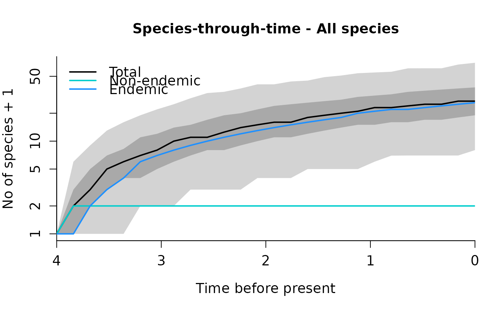

Produces STT plots. If only one type of species is present in the simulated islands, STT is plotted for all species. If two types are present, three plots are produced: STT for all, STT for type 1 and STT for type 2.
R plots with number of total, endemic and non-endemic STTs for different types of species for the entire time span the islands were simulated. 2.5-97.5th percentiles are plotted in light grey, 25-75th percentiles plotted in dark grey.
Usage
DAISIE_plot_sims(
island_replicates,
plot_plus_one = TRUE,
type = "all_species",
sample_freq = 25,
trait_pars = NULL
)Arguments
- island_replicates
List output from
DAISIE_sim_core_cr(),DAISIE_sim_core_time_dep(),DAISIE_sim_core_cr_shift()orDAISIE_sim_min_type2()functions. Minimally, this must be a list that has as many elements as replicates. Each element must be a list with the elementsisland_age,not_presentandstt_all.stt_allmust be a data frame with the column namesTime,nI,nA,nCandpresent.- plot_plus_one
Boolean to indicate to plot all values plus one. Set to
TRUEfor default behavior. Set toFALSEto plot all values without adding one. Only works when there is one type of species.- type
String to indicate if stt of all species or all possible stt should be plotted. Default is
"all_species","type1_species"or"type2_species"should be plotted.- sample_freq
Numeric specifing the number of units times should be divided by for plotting purposes. Larger values will lead to plots with higher resolution, but will also run slower.
- trait_pars
A named list containing diversification rates considering two trait states created by
create_trait_pars:[1]:A numeric with the per capita transition rate with state1
[2]:A numeric with the per capita immigration rate with state2
[3]:A numeric with the per capita extinction rate with state2
[4]:A numeric with the per capita anagenesis rate with state2
[5]:A numeric with the per capita cladogenesis rate with state2
[6]:A numeric with the per capita transition rate with state2
[7]:A numeric with the number of species with trait state 2 on mainland
References
Valente, L.M., A.B. Phillimore and R.S. Etienne (2015). Equilibrium and non-equilibrium dynamics simultaneously operate in the Galapagos islands. Ecology Letters 18: 844-852.
Examples
### Plot islands with single process (only one type of species)
utils::data(islands_1type_1000reps)
DAISIE_plot_sims(
island_replicates = islands_1type_1000reps
)

### Plot island with type 1 and type 2
utils::data(islands_2types_1000reps)
DAISIE_plot_sims(
island_replicates = islands_2types_1000reps
)